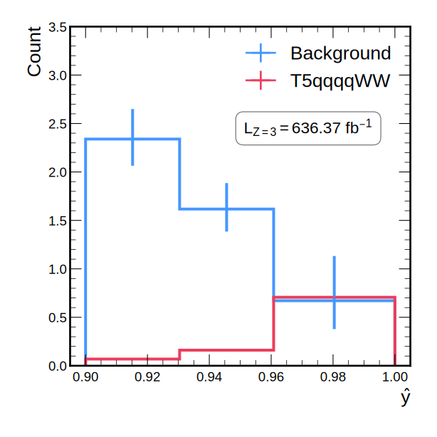
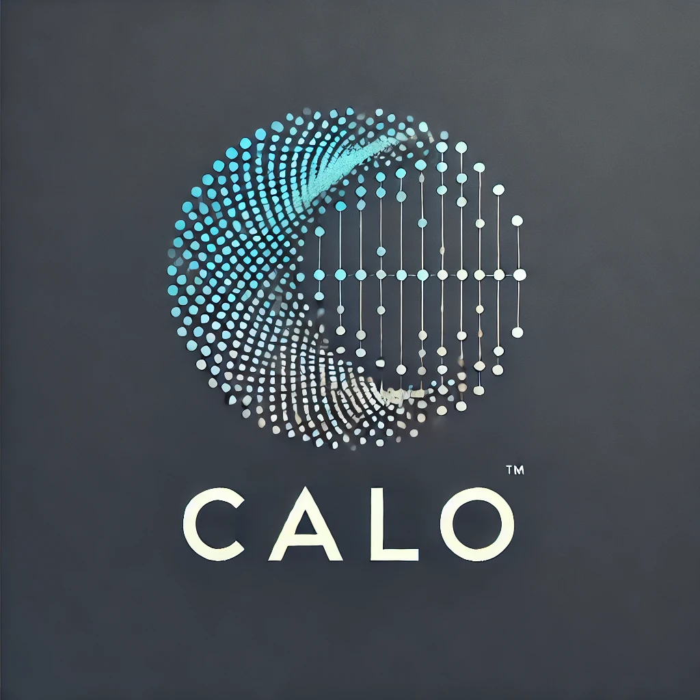

Experience
Languages & Frameworks
Projects
Gen Model Playground
A versatile template repository for experimenting with generative models like GANs, VAEs, and Normalizing Flows, designed for educational purposes and quick prototyping, with easy integration with Weights & Biases for logging and visualization.

Thesis Repository
Consolidated all the models used in my thesis into one framework, making it easier to replicate results in my thesis as reproducibility is often overlooked in science.

CaloUtils
A package providing tools for analyzing and processing calorimeter data in high-energy physics, streamlining workflows and improving accuracy in calorimeter-related analyses.